Technical art highlights
- 16-material library (M1–M16) built on shared master materials
- Landscape layer blend with slope masks and world-aligned cliffs
- Two-sided foliage, single-layer water and emissive lantern shading
- Two PCG graphs: Blueprint-driven cliffs and light-aware moss
- Fog, moonlight, candle and firelight across 8 scene captures
- MetaHuman + Mixamo retargeting + Marvelous Designer cloth
01Overview
The Feeding is a short film built in Unreal Engine 5.6 and inspired by the mythology of China’s Miao people. A priestess deep in the mountains spreads rumors of a forbidden ritual that can bring the dead back to life, luring curious young people up the mountain only to sacrifice them to feed her parasitic spirit insects (Gu).
I built it solo: Gaea terrain, Blueprint-driven PCG cliffs and moss, a 16-material library, modular environment pieces, MetaHuman characters with retargeted animation, Marvelous Designer cloth, lighting, and a Sequencer cinematic rendered through Movie Render Queue. The film is pre-production for a future narrative horror game, where players explore the mountain and gather evidence of the priestess’s scheme.
02My contributions
Material library (M1–M16)
16 materials across terrain, foliage, water, architecture and props, built as instances of a few master materials so every scene could be relit fast.
Lighting & rendering
Fog, moonlight, candle and firelight across 8 scene captures, delivered as a Movie Render Queue cinematic.
Procedural content (PCG)
Two PCG graphs: PCG_Cliff to build cliff shapes from rock meshes via Blueprints, and a Moss generator that grows along a light direction.
Terrain
Mountains modelled and textured in Gaea, then exported to Unreal as the base for PCG dressing.
Characters
A MetaHuman priestess (built from Grace’s DNA), villagers, Mixamo → MetaHuman retargeting and Live Link facial capture.
Cloth simulation
Cloaks patterned and simulated in Marvelous Designer, re-simulated to fix hand clipping, and imported as Alembic caches.
03Final renders
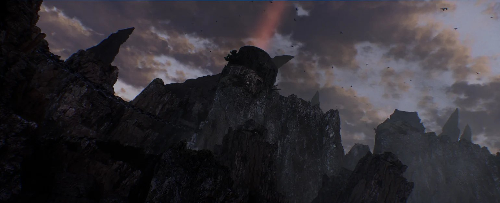
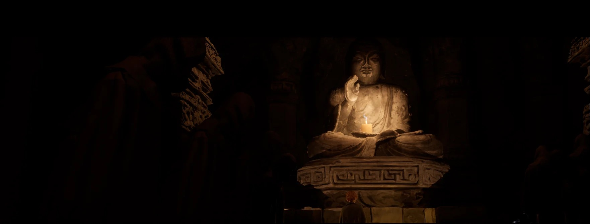
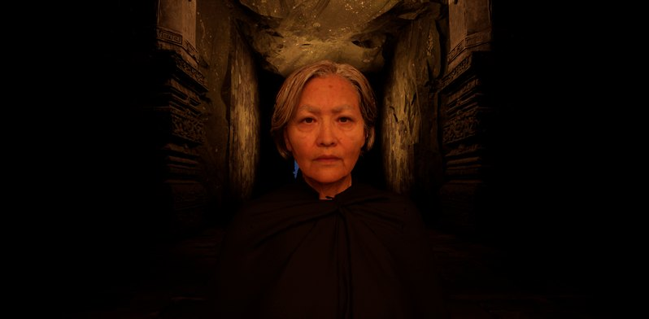
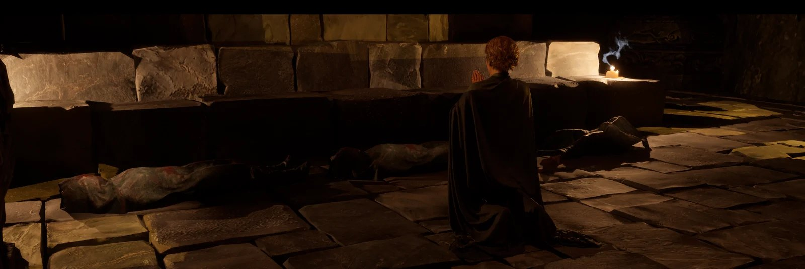
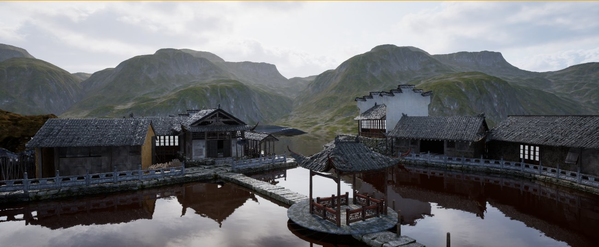
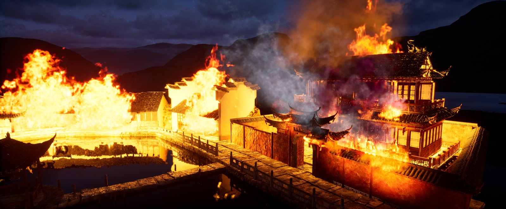
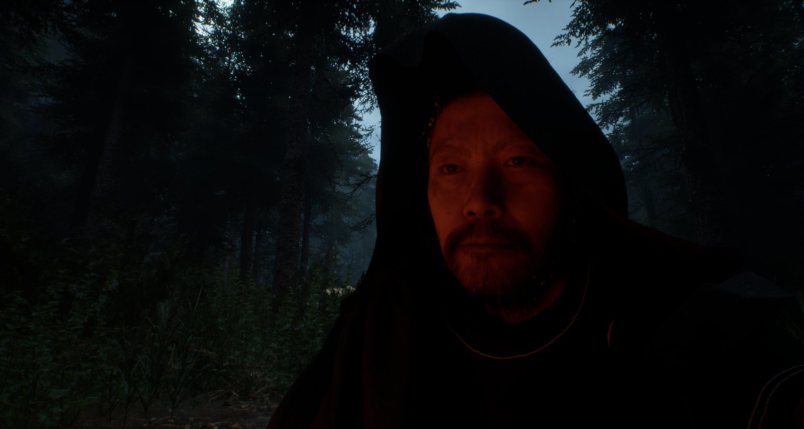
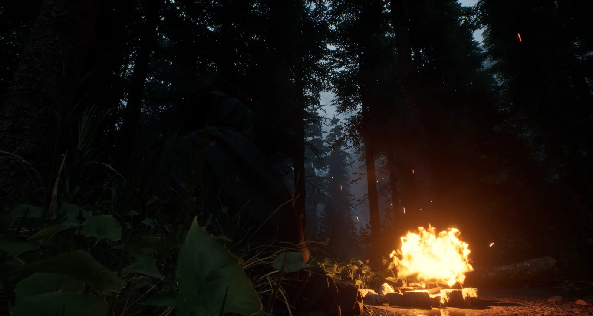
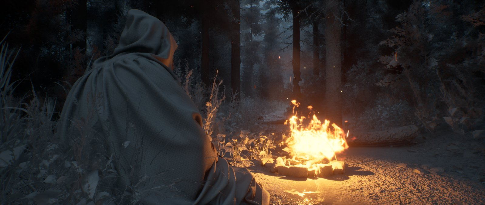
04Material library
The film’s mood depends on surfaces reading correctly in fog, moonlight and firelight. I built 16 materials in five families as instances of a few master materials. Each family exposes the same parameters (tint, roughness range, normal strength, tiling, macro variation), so relighting a scene meant adjusting parameters, not rebuilding shaders.
Mountains
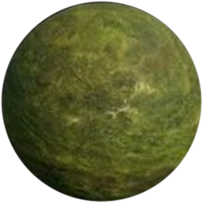
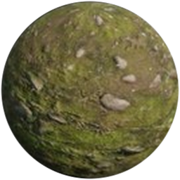
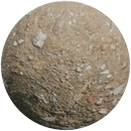
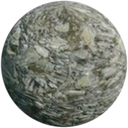
Plants & Trees
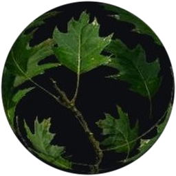
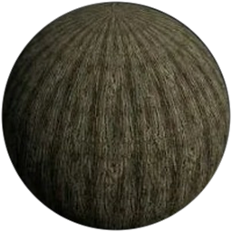
Water
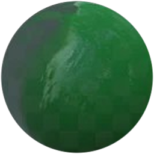
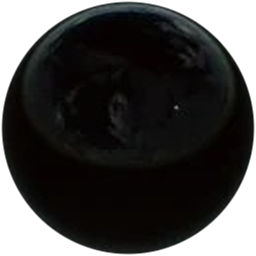
Architecture
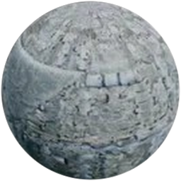
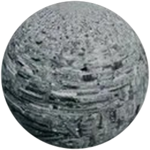
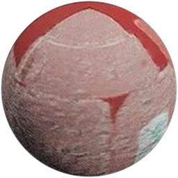
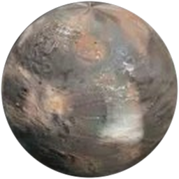
Decoration
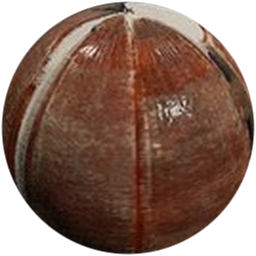
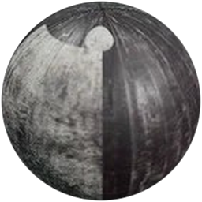
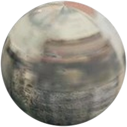
How each family is built in UE 5.6
Mountains · M1–M4
Landscape material using Landscape Layer Blend (Grass, Grass with Rocks, Surface Rocks, Rocks). A slope mask from the world-space normal pushes rock onto steep faces, and height-lerp blends grass into rock cracks instead of fading it.
Why it works
Rock meshes and cliffs use a world-aligned (triplanar) version, so stretched UVs on vertical faces don’t smear. Distance-based tiling hides repetition in wide shots.
Plants & Trees · M5–M6
Leaves use the Two-Sided Foliage shading model with a masked opacity cut-out and a subsurface colour, so leaves glow when backlit by fire. Wind comes from world-position offset. Bark is an opaque tiling material with normal and AO.
Why it works
Subsurface foliage is what makes the forest firelight in scene 8 feel warm rather than flat.
Water · M7–M8
UE5 Single Layer Water shading with two panning normal maps at different scales and speeds. Absorption and scattering colours set the look: murky jade green (M7) and dark, mirror-like ink (M8) for night.
Why it works
One master, two instances. Only colour, roughness and ripple speed change between the day town and the night river.
Architecture · M9–M12
Stone pillar, roof tile, lacquered attic wood and a weathered pedestal. A top-down world-normal mask adds dirt and moss on upward faces, and a height-lerp mask chips red lacquer to reveal wood underneath (M11).
Why it works
Ageing is procedural, so every modular piece gets unique wear without new textures, which suits an abandoned temple and a burned town.
Decoration · M13–M16
Two wood instances (red-brown and dark) from one wood master, aged paper for the book, and a paper lantern with a calligraphy texture, two-sided subsurface and an emissive parameter with a gentle flicker, paired with a point light.
Why it works
The lantern’s emissive plus its real light source makes candlelit scenes read correctly both in camera and in reflections.
Look-dev process
- Neutral check: validate every instance on a sphere under neutral lighting first, so albedo and roughness values stay physically plausible.
- In-context check: re-check the same materials under fog, moonlight and firelight in the actual shot, and only tweak exposed parameters.
- Lock exposure: fix camera exposure per sequence so material changes, not auto-exposure, drive how scenes look.
05Terrain & PCG
Terrain in Gaea
The mountains were modelled node-by-node in Gaea (erosion, flow and height passes), then textured and exported to Unreal as the macro form of the karst ranges of western Hunan.
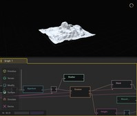
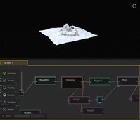
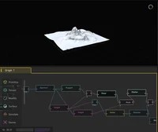
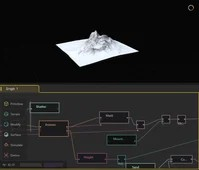
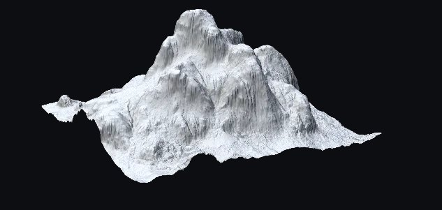
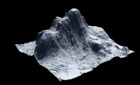
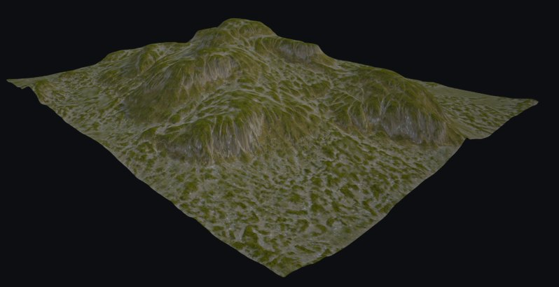
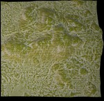
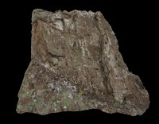
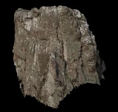
PCG_Cliff: building cliffs from rock meshes
- Step 1: find suitable rock static meshes.
- Step 2: assemble the static meshes into PCG assets.
- Step 3: call the PCG assets from Blueprints to form different cliff shapes.
- Step 4: manually adjust parameters to reshape each cliff.
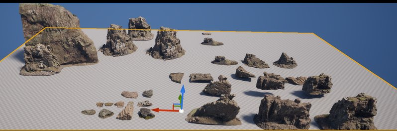
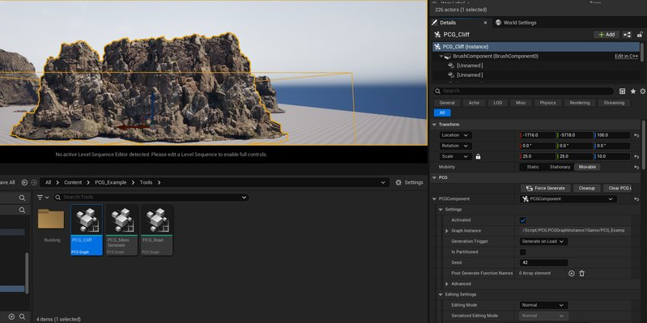
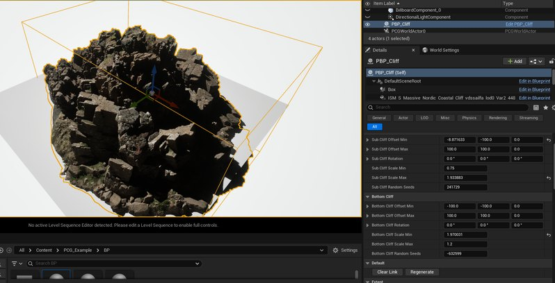
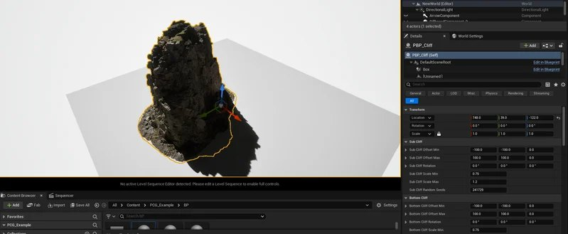
Moss: growing vegetation along a light direction
- Step 1: find suitable small rock and plant meshes.
- Step 2: assemble them as a level instance.
- Step 3: test the effect on a simple shape.
- Step 4: test on the mountain model.
- Step 5: add various sampling models for variety.
- Step 6: set a light direction so moss grows where plants realistically would.
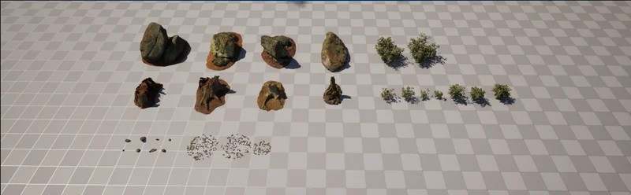
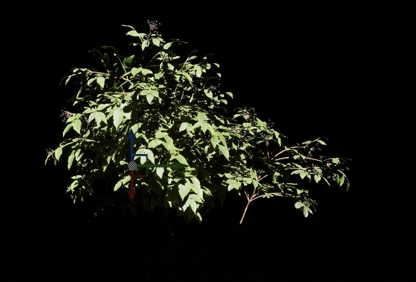
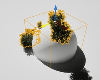
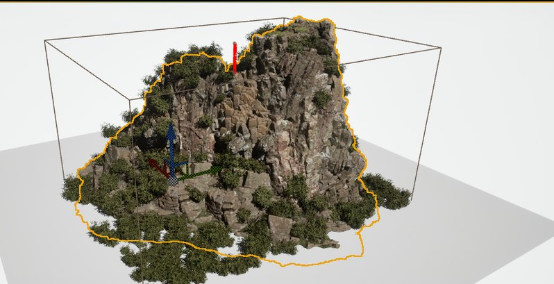
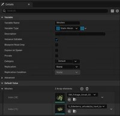
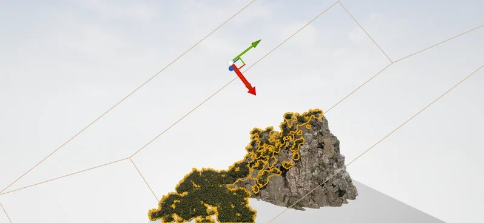
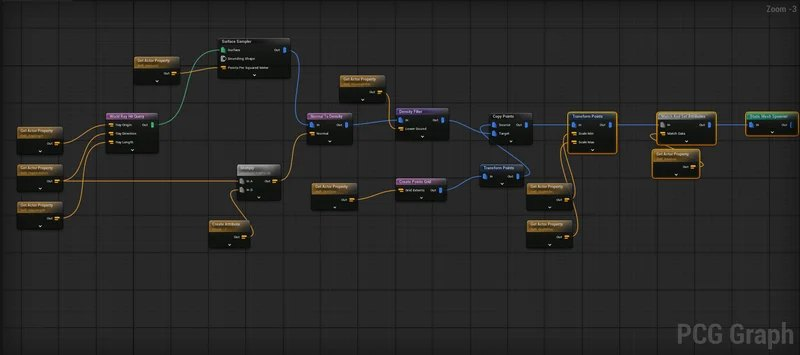
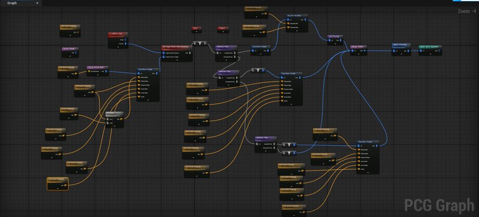
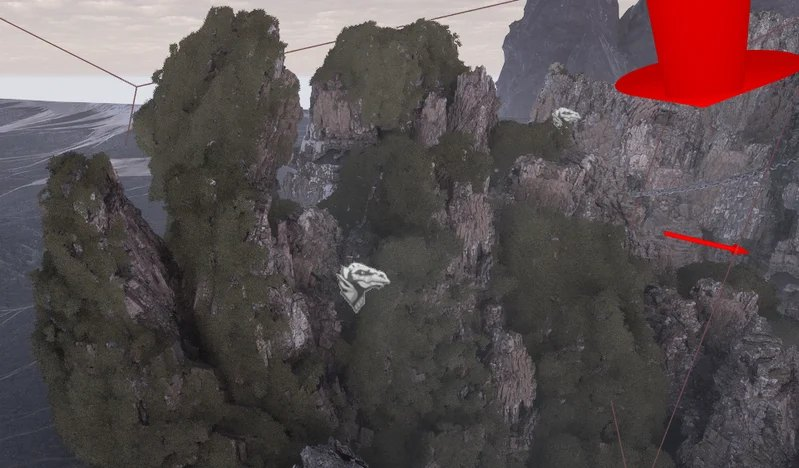
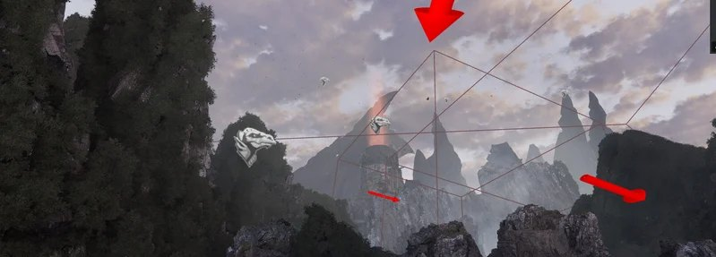
06Modelling
Character · villagers
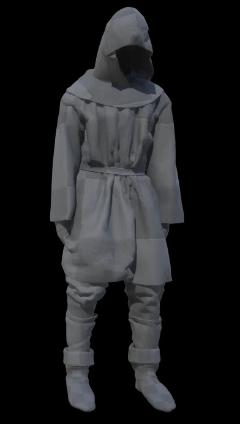
Modular components
A kit of props and architectural pieces (stone tablets, railings, lattice windows, gates, a pavilion roof, braziers, fish carvings, dead trees and branches) used to dress the temple, the town and the mountain path.
07Characters & cinematics
MetaHuman priestess
I enabled the MetaHuman plugins in UE 5.6 and created the character in the integrated MetaHuman editor. I started from Grace’s MetaHuman DNA, blended body presets for an elderly frame with a slight stoop, and focused facial detail on the eyes, mouth corners and nasolabial folds, with skin matched to an older Asian woman. I then exported her as a combined skeletal mesh.
Mixamo → MetaHuman retargeting
Cloth simulation (Marvelous Designer)
Sequencer & Movie Render Queue
- Foundation: create a Level Sequence, enable the Cinematic toolbar, drag actors into tracks.
- Animation & cameras: time each character’s animation. Build shots with Cine Camera Actors, tuning focal length and depth of field.
- Polish: spline-interpolate camera moves, sync audio with lip-sync, and export through Movie Render Queue.
08Challenges & solutions
One environment, very different moods
The same town had to read as peaceful by day and as a burning ruin at night, and the temple had to hold up under a single candle.
Master materials + parameter-only relighting
All 16 materials are instances with shared parameters, so each lighting pass only meant retuning tint, roughness and emissive values.
Stretched textures on vertical cliffs
Gaea mountains and PCG cliffs have steep faces where standard UVs smear.
Slope masks + world-aligned texturing
Rock goes onto steep faces by slope, and cliff meshes use world-aligned projection, so surfaces stay crisp from any angle.
Hand-placing a mountain range doesn’t scale
Dressing huge karst cliffs with rocks and moss by hand would take too long and look repetitive.
Two PCG graphs
PCG_Cliff builds cliff shapes from rock meshes via Blueprints, and the Moss graph grows vegetation along a light direction.
Retargeted animation distorted the MetaHuman
Mixamo and MetaHuman skeletons have different root hierarchies and rest poses, so retargeted clips twisted the whole body.
Manual root mapping + custom pose profile
Mapped Mixamo’s Hips to MetaHuman’s pelvis in the Retarget Manager, and built a pose profile that matches the arms to the MetaHuman T-pose.
Cloak clipping through hands
The first cloth simulation clipped through the hands during gestures.
Resimulate
Adjusted patterns and collision, re-simulated in Marvelous Designer, and imported the result as an Alembic cache matched to the animation.
09Research & pre-production
I researched Miao culture (Gu sorcery, stilt-house architecture, silver ornaments and ritual), Chinese folk-horror games such as Paper Dolls, and audience data. A YouGov (2024) survey showed psychological and supernatural as top horror subgenres, and Steam’s horror tags lean first-person and atmospheric. Both pointed to a first-person, atmosphere-first direction. Two player interviews confirmed it: limited light and environmental storytelling, not jump scares.